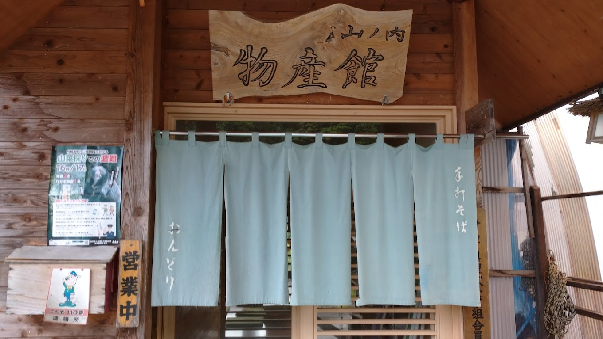

板蕎麥麵
板そば\Buckwheat noodles
板蕎麥麵介紹
「板蕎麥麵」在如托盤一般的長型板上盛大量的蕎麥麵後，大家一同圍著食用。在山形當中，特別是在村山市和大石田町等氣候嚴酷的山間地帶，食用蕎麥麵來替代米飯的主食，口感十足。並且，澱粉多，味道濃厚。這是因為此處山間地帶寒暖溫差大，適合蕎麥的栽種。以前，在村民全體出動的農事之後，就有「以蕎麥麵款待」的習慣，宴請手打蕎麥麵，以慰辛勞。
現代人講究「健康、自然」的潮流，令滑溜順口、樸素實在、富含纖維質的蕎麥麵，成為健康爽口的時尚美味，更吸引無數美食家前來山形嚐鮮。位於縣內的村山市則有一條著名的「最上川三難所蕎麥街道」，由於蕎麥麵產業，漸漸發展成超人氣的「蕎麥麵一條街」，可是來到東北吃蕎麥麵必去之地。
板蕎麥麵的由來
 在山形，蕎麥麵容顏素淨、色澤天然，樸實如大地吐納而成的絲線，經過滾水洗浴、冰水滑溜之後，挽成一卷盛入端正的木製餐盒內，散放出平易近人的庶民之香。蕎麥是生長在寒冷地區的植物，山形縣有最上川絕佳水質的灌溉，非常適合蕎麥的生長，蕎麥生得又高又壯，當地出產的蕎麥做出來的蕎麥麵與眾不同，特別爽口、充滿蕎麥香氣。
在山形，蕎麥麵容顏素淨、色澤天然，樸實如大地吐納而成的絲線，經過滾水洗浴、冰水滑溜之後，挽成一卷盛入端正的木製餐盒內，散放出平易近人的庶民之香。蕎麥是生長在寒冷地區的植物，山形縣有最上川絕佳水質的灌溉，非常適合蕎麥的生長，蕎麥生得又高又壯，當地出產的蕎麥做出來的蕎麥麵與眾不同，特別爽口、充滿蕎麥香氣。
山形最具代表性的蕎麥麵就是「板蕎麥麵」，所謂「板」指的是以秋田杉所製成的木製盒，這種蕎麥麵的特色就是裝在木製麵盒裡，除了蕎麥香味之外，還多了一份杉木香，且份量十足，最適合食量大的饕客滿足口腹之慾。
板蕎麥麵推薦店家
手打蕎麦おんどり
 來到村山市必吃的蕎麥麵名店「手打蕎麦おんどり」，這家蕎麥麵均由手工製作而成，店裡主要販售冷麵，分別有「田舍板蕎麥寬麵」和「板蕎麥細麵」，也有綜合兩款麵的套餐；綜合寬細兩款麵的套餐特色是將粗與細麵條放入同一個箱內，各遽一邊，加上豐富小菜，視覺上就先大大滿足；實際品嚐，寬麵吃起來比細麵更有嚼勁，且越吃越有麵香。
瀧不動生蕎麥麵
「白御膳蕎麥」的獨特甘甜和脆脆的口感，品味農村的蕎麥麵風味。 時令食材炸出來的天婦羅、用蕎麥粉做成餅狀炸出來的「炸蕎麥餅」、熱騰騰的鴨湯澆在冷蕎麥麵上享用的「鴨湯板」也很有人氣！
總結
山形的蕎麥麵非常出名，因為得天獨厚的氣候原因，使得蕎麥店q談爽滑，非常有嚼竟，此外，冬天也有熱湯蕎麥麵，所以可謂是來山形必吃的美食之一。